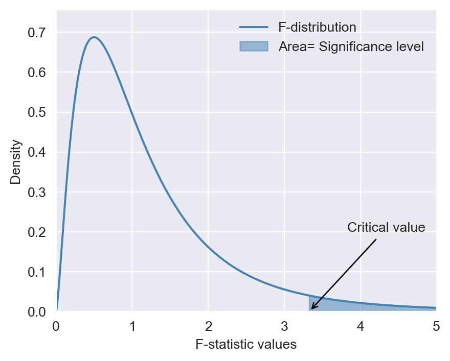
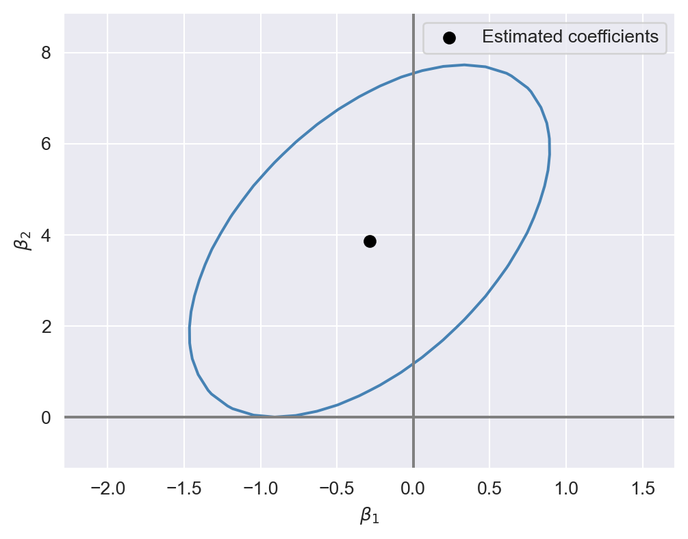
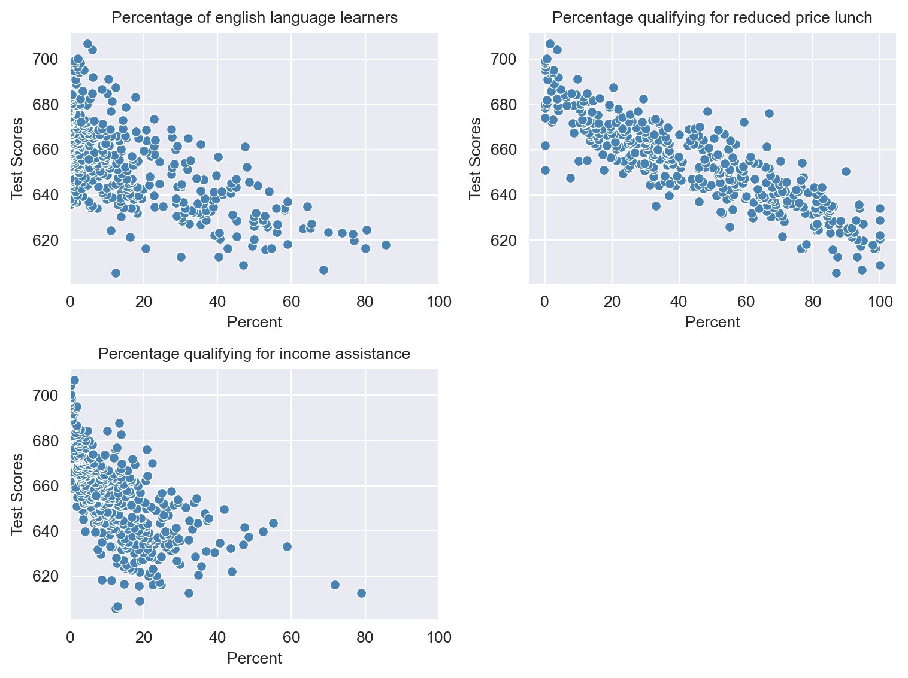

import numpy as np
import pandas as pd
import matplotlib.pyplot as plt
import seaborn as sns
import statsmodels.api as sm
import statsmodels.formula.api as smf
from statsmodels.iolib.summary2 import summary_col
import scipy.stats as stats17 Hypothesis Tests and Confidence Intervals in Multiple Regression
17.1 Hypothesis tests and confidence intervals for a single coefficient
Consider the following multiple regression model: \[ \begin{align} Y_i=\beta_0+\beta_1X_{1i}+\beta_2X_{2i}+\dots+\beta_kX_{ki}+u_i, \end{align} \tag{17.1}\] for \(i=1,2,\dots,n\). We want to test \(H_0:\beta_j=\beta_{j0}\) versus \(H_1:\beta_j\ne\beta_{j0}\), where \(\beta_{j0}\) is the hypothesized value (known) and \(j=1,2,\dots,k\). As in Chapter 15, we can follow the following steps to test the null hypothesis:
Step 1: Use Python to compute the standard error of \(\hat{\beta}_j\), denoted as \(\text{SE}(\hat{\beta}_j)\).
Step 2: Compute the \(t\)-statistic under \(H_0\): \(t=\frac{\hat{\beta}_j-\beta_{j0}}{\text{SE}(\hat{\beta}_j)}\).
Step 3: Compute the \(p\)-value under \(H_0\): \(\text{p-value}=2\times\Phi(-|t^{act}|)\), where \(t_{calc}\) is the \(t\)-statistic computed in Step 2.
Step 4: Reject \(H_0\) at the \(5\%\) significance level if \(\text{p-value}<0.05\), or equivalently, if \(|t_{calc}|>1.96\).
The theoretical justification for this procedure is based on the large-sample properties of the OLS estimators, as summarized in Theorem 16.2 of Chapter 16. In particular, this testing approach requires a large sample size to ensure that the normal distribution provides a good approximation to the sampling distribution of the \(t\)-statistic.
Recall that the \(95\%\) two-sided confidence interval for \(\beta_j\) is an interval that contains \(\beta_j\) with a \(95\%\) probability. When the sample size is large, the \(95\%\) two-sided confidence interval for \(\beta_j\) is given by \[ \begin{align} \left[\hat{\beta}_j-1.96\times\text{SE}(\hat{\beta}_j),\,\hat{\beta}_j+1.96\times\text{SE}(\hat{\beta}_j)\right], \end{align} \]
for \(j=1,\dots,k\).
17.1.1 Application to test scores and the student–teacher ratio
For our test score example, we consider the following model: \[ \begin{align} \text{TestScore}=\beta_0+\beta_1\times\text{STR}+\beta_2\text{Expn}+\beta_3\times\text{PctEL}+u, \end{align} \tag{17.2}\]
where PctEL is the percentage of English learners in the district and Expn is the total annual expenditures per pupil in the district in thousands of dollars. We estimate the model by assuming both homoskedastic and heteroskedastic error terms. As we have seen in Chapter 15, we can obtain heteroskedasticity-robust standard errors by specifying the cov_type="HC1" option in the fit method.
# Load the dataset
data = pd.read_excel("data/caschool.xlsx", sheet_name="caschool", header=0)
# Scale expenditure to thousands of dollars
data[["expn"]] = data[["expn_stu"]]/1000
# Display column names
data.columnsIndex(['Observation Number', 'dist_cod', 'county', 'district', 'gr_span',
'enrl_tot', 'teachers', 'calw_pct', 'meal_pct', 'computer', 'testscr',
'comp_stu', 'expn_stu', 'str', 'avginc', 'el_pct', 'read_scr',
'math_scr', 'expn'],
dtype='object')# OLS estimation with homoskedastic standard errors
model1=smf.ols(formula='testscr ~ str + expn + el_pct',data=data)
result1=model1.fit()
# OLS estimation with heteroskedasticity-robust standard errors (HC1)
model2=smf.ols(formula='testscr ~ str + expn + el_pct',data=data)
result2=model2.fit(cov_type="HC1")We use the summary_col function to present the estimation results contained in result1 and result2 in Table 17.1.
# Print results in table form
models=['Homoskedastic Model', 'Heteroskedastic Model']
results_table=summary_col(results=[result1,result2],
float_format='%0.3f',
stars=True,
model_names=models)
results_table| Homoskedastic Model | Heteroskedastic Model | |
| Intercept | 649.578*** | 649.578*** |
| (15.206) | (15.458) | |
| str | -0.286 | -0.286 |
| (0.481) | (0.482) | |
| expn | 3.868*** | 3.868** |
| (1.412) | (1.581) | |
| el_pct | -0.656*** | -0.656*** |
| (0.039) | (0.032) | |
| R-squared | 0.437 | 0.437 |
| R-squared Adj. | 0.433 | 0.433 |
Standard errors in parentheses.
* p<.1, ** p<.05, ***p<.01
We consider testing \(H_0:\beta_1=0\) versus \(H_1:\beta_1\ne0\). Using heteroskedasticity-robust standard errors, we can compute the \(t\)-statistic as \(t=\frac{\hat{\beta}_1-0}{\text{SE}(\hat{\beta}_1)}=-0.29/0.48=-0.60\). Since \(|t|=0.60<1.96\), we fail to reject \(H_0\).
The p-value is \(2\Phi(-|t_{calc}|)=2\Phi(-0.60)\). Using the following code chunk, we find that \(p\)-value\(=0.552>0.05\), and thus, we fail to reject \(H_0\) at the \(5\%\) significance level. Both the \(t\)-statistic and the \(p\)-value suggest that the student-teacher ratio does not have a statistically significant effect on the test scores at the \(5\%\) significance level.
# p-value
t=result2.tvalues["str"]
# t=result1.tvalues.iloc[1]
p_value = 2 * stats.norm.cdf(-np.abs(t), loc=0, scale=1)
p_value.round(3)0.552Using the heteroskedasticity-robust standard error reported in Table 17.1, the \(95\%\) two-sided confidence interval for \(\beta_1\) is \[ \left[\hat{\beta}_1-1.96\times\text{SE}(\hat{\beta}_1),\,\hat{\beta}_1+1.96\times\text{SE}(\hat{\beta}_1)\right]=[-1.23,\,0.65]. \]
Since the confidence interval includes the hypothesized value \(0\), it favors \(H_0\), i.e., we fail to reject \(H_0\) at the \(5\%\) significance level. Alternatively, the result2.conf_int function can be used to get the confidence intervals as shown below.
# 95% two-sided confidence interval
result2.conf_int(alpha=0.05).round(2) | 0 | 1 | |
|---|---|---|
| Intercept | 619.28 | 679.88 |
| str | -1.23 | 0.66 |
| expn | 0.77 | 6.97 |
| el_pct | -0.72 | -0.59 |
17.2 Tests of joint hypotheses
A joint hypothesis imposes two or more linear restrictions on the coefficients of the model. In particular, we consider the following joint null and alternative hypotheses: \[ \begin{align*} &H_0: \underbrace{\beta_j=\beta_{j0}}_{\text{1st restriction}},\,\underbrace{\beta_l=\beta_{l0}}_{\text{2nd restriction}},\dots,\underbrace{\beta_m=\beta_{m0}}_{\text{qth restriction}},\\ &H_1: \text{At least one restriction does not hold}, \end{align*} \]
where \(\beta_{j0}, \beta_{l0},\dots,\beta_{m0}\) are hypothesized known values. Two specific examples are given in the following: \[ \begin{align*} &H_0: \beta_1=0, \beta_3=0,\\ &H_1: \text{At least one restriction is false}, \end{align*} \] \[ \begin{align*} &H_0: \beta_1=0, \beta_3+2\beta_5=1,\\ &H_1: \text{At least one restriction is false}. \end{align*} \]
Note that in both examples, the joint null hypothesis specifies linear restrictions for the coefficients. A joint null hypothesis can be tested using an \(F\)-statistic. To express the \(F\)-statistic, we first need to formulate the null hypothesis in matrix form. Using matrix notation, we note that a joint null hypothesis that involve \(q\) linear restrictions on parameters can be expressed as
\[ \begin{align} H_0:\bs{R}\bs{\beta}=\bs{r}, \end{align} \]
where \(\bs{R}\) is the \(q\times(k + 1)\) matrix specifying restrictions, \(\bs{\beta}=(\beta_0,\dots,\beta_k)^{'}\) is the \((k+1)\times1\) vector of parameters, and \(\bs{r}\) is the \(q\times1\) vector. In the following example, we show how \(\bs{R}\) and \(\bs{r}\) can be specified for two joint null hypotheses.
Example 17.1 (Specifying joint null hypotheses) Consider \(H_0:\beta_1=0,\beta_2=0, \beta_3=3\). For this null hypothesis, we have \[ \begin{align} \bs{R}= \begin{pmatrix} 0&1&0&0&0&\cdots&0\\ 0&0&1&0&0&\cdots&0\\ 0&0&0&1&0&\cdots&0\\ \end{pmatrix}_{3\times(k+1)} \quad\text{and}\quad \bs{r}= \begin{pmatrix} 0\\ 0\\ 3 \end{pmatrix}. \end{align} \] If we consider \(H_0:\beta_1=0\) and \(\beta_2+2\beta_3=1\), then we have \[ \begin{align} \bs{R}= \begin{pmatrix} 0&1&0&0&0&\cdots&0\\ 0&0&1&2&0&\cdots&0 \end{pmatrix}_{2\times(k+1)} \quad\text{and}\quad \bs{r}= \begin{pmatrix} 0\\ 1 \end{pmatrix}. \end{align} \]
Note that in the second case, we have the restriction \(\beta_2+2\beta_3=1\) involving two parameters. However, the total number of restrictions in \(H_0:\beta_1=0\) and \(\beta_2+2\beta_3=1\) is still \(q=2\).
To test \(H_0:\bs{R}\bs{\beta}=\bs{r}\), we use the following heteroskedaticity-robust \(F\)-statistic: \[ \begin{align} F=\left(\bs{R}\hat{\bs{\beta}}-\bs{r}\right)^{'}\left(\bs{R}\hat{\bs{\Sigma}}\bs{R}^{'}\right)^{-1}\left(\bs{R}\hat{\bs{\beta}}-\bs{r}\right)/q, \end{align} \] where \(\hat{\bs{\Sigma}}\) is the estimate of heteroskedasticity-robust variance of \(\hat{\bs{\beta}}\). When the sample size is large, the distribution of \(F\)-statistic is approximated by \(\chi^2_q/q\equiv F_{q,\infty}\). In Chapter 29, we prove that the sampling distribution of the \(F\)-statistic is approximated by \(F_{q,\infty}\) under the null hypothesis.
To test the null hypothesis, we can follow the steps below:
Step 1: Use Python to compute the \(F\)-statistic.
Step 2: For a given significance level \(\alpha\), use Python to determine the critical value shown in Figure 17.1. If \(F\)-statistic\(>\)critical value, then reject the null hypothesis at the \(5\%\) significance level.
Step 3: The \(p\)-value is \(P(F_{q,\infty}>F_{calc})\), where \(F_{calc}\) is the actual value computed in Step 1. If \(p\)-value\(<0.05\), reject the null hypothesis at the \(5\%\) significance level.
# F-distribution and the critical value
# Set parameters for the F-distribution
d1 = 5 # degrees of freedom numerator
d2 = 10 # degrees of freedom denominator
alpha = 0.05 # significance level
# Generate x values for the density plot
x = np.linspace(0, 5, 1000)
y = stats.f.pdf(x, d1, d2)
# Calculate the critical value for the specified significance level
critical_value = stats.f.ppf(1 - alpha, d1, d2)
# Create the density plot
sns.set_style('darkgrid')
plt.figure(figsize=(5, 4))
plt.plot(x, y, label='F-distribution', color='steelblue')
#plt.axvline(critical_value, color='red', linestyle='--', label='Critical value')
plt.fill_between(x, y, where=(x > critical_value), color='steelblue', alpha=0.5, label='Area= Significance level')
# Annotate the critical value on the x-axis
plt.annotate('Critical value',
xy=(critical_value, 0),
xytext=(critical_value + 0.5, 0.2),
arrowprops=dict(edgecolor='black', arrowstyle='->',lw=1),
fontsize=10)
plt.xlabel('F-statistic values')
plt.ylabel('Density')
plt.legend(frameon=False)
plt.xlim(0, 5)
plt.ylim(0, max(y) * 1.1)
plt.show()
Most statistical software, including Python, returns an overall regression \(F\)-statistic by default. This \(F\)-statistic is computed for the following null and alternative hypotheses: \[ \begin{align*} &H_0: \beta_1=0, \beta_2=0,\dots,\beta_k=0,\\ &H_1: \text{At least one restriction is false}. \end{align*} \]
Under the null hypothesis, all regressors are irrelevant, yielding a restricted model that only includes an intercept term. In large sample, the overall regression \(F\)-statistic has an \(F_{k,\infty}\) distribution under the null hypothesis.
A special case arises when we want to test a single restriction, i.e., when we have \(q=1\). In this case, the null hypothesis becomes \(H_0: \beta_j={\beta_{j0}}\), and the \(F\)-statistic is equal to the square of the \(t\)-statistic.
There is a simple formula for the \(F\)-statistic that holds only under homoskedasticity. To introduce this formula, we first need to define the restricted and unrestricted models. We call the model under the null hypothesis the restricted model, and the model under the alternative hypothesis the unrestricted model. For example, consider \(H_0:\beta_1=0,\beta_2=0\) for the model in Equation 17.2. Then, we have
- Restricted model: \(\text{TestScore}=\beta_0+\beta_3\times\text{PctEL}+u\),
- Unrestricted model: \(\text{TestScore}=\beta_0+\beta_1\times\text{STR}+\beta_2\text{Expn}+\beta_3\times\text{PctEL}+u\).
Then, the homoskedasticity-only \(F\)-statistic is \[ \begin{align} F&=\frac{(SSR_r-SSR_u)/q}{SSR_u/(n-k_u-1)}=\frac{(R^2_u-R^2_r)/q}{(1-R^2_u)/(n-k_u-1)}, \end{align} \tag{17.3}\]
where
- \(SSR_r\) is the sum of squared residuals from the restricted regression,
- \(SSR_u\) is the sum of squared residuals from the unrestricted regression,
- \(R^2_r\) is the \(R^2\) from the restricted regression,
- \(R^2_u\) is the \(R^2\) from the unrestricted regression,
- \(q\) is the number of restrictions under the null, and
- \(k_u\) is the number of regressors in the unrestricted regression.
Under homoskedasticity, the difference between the homoskedasticity-only \(F\)-statistic and the heteroskedasticity-robust \(F\)-statistic vanishes as the sample size gets larger. Thus, the sampling distribution of the homoskedasticity-only \(F\)-statistic is approximated by \(F_{q,\infty}\) when the sample size is large. That is, we can use the critical values from \(F_{q,\infty}\) for the homoskedasticity-only \(F\)-statistic.
It is important to note that the homoskedasticity-only \(F\)-statistic is only valid when the error terms are homoskedastic. Stock and Watson (2020) write that “Because homoskedasticity is a special case that cannot be counted on in applications with economic data—or more generally with data sets typically found in the social sciences—in practice the homoskedasticity-only \(F\)-statistic is not a satisfactory substitute for the heteroskedasticity-robust \(F\)-statistic.” Therefore, we recommend using the heteroskedasticity-robust \(F\)-statistic in all cases.
There is also a special case where the homoskedasticity-only \(F\)-statistic has an exact sampling distribution. This case arises when the error terms are homoskedastic and normally distributed. When this condition holds, the homoskedasticity-only \(F\)-statistic in Equation 17.3 has an \(F_{q,n-k_u-1}\) distribution under the null hypothesis, irrespective of the sample size. Also, recall that \(F_{q,n-k_u-1}\) converges to \(F_{q,\infty}\) when \(n\) is large. Thus, when the sample size is sufficiently large, we expect that the difference between the two distributions will be small. However, when the sample size is small, both distributions can yield different critical values.
17.2.1 Application to test scores and the student–teacher ratio
We consider the model in Equation 17.2 and want to test \[ \begin{align*} &H_0:\beta_1=0,\beta_2=0,\\ &H_1:\text{At least one coefficient is not zero}. \end{align*} \]
We can use the result2.f_test function to compute the heteroskedasticity-robust \(F\)-statistic. In the following code chunk, the null hypothesis is specified through hypothesis="str=0,expn_stu=0".
# Define the joint null hypothesis
hypothesis = "str=0, expn=0"
# Perform the F-test
f_test_result = result2.f_test(hypothesis)
print(f_test_result)<F test: F=5.433727045028506, p=0.004682304362882446, df_denom=416, df_num=2>The heteroskedasticity-robust \(F\)-statistic is \(5.43\) with a \(p\)-value of \(0.0047\). Since the \(p\)-value is less than \(0.05\), we reject the null hypothesis at the \(5\%\) significance level.
Since the \(F\)-statistic has \(F_{2,\infty}=\chi^2_2/2\) under the null distribution, we have \[ P(F_{q,\infty}>F_{calc})=P(\chi^2_2/2>F_{calc})=P(\chi^2_2>2\times F_{calc}), \]
where \(F_{calc}=5.43\). Thus, we can alternatively compute the \(p\)-value in the following way:
# P-value of the F-statistic
1-stats.chi2.cdf(2*5.43,df=2)0.004383095802668824We know that the \(F\)-statistic has \(F_{2,\infty}=\chi^2_2/2\) under the null distribution. Thus, the critical value at the the \(5\%\) significance level is approximately \(3\), as shown below. Since \(F\)-statistic\(=5.43>3\), the \(F\)-statistic also suggests rejection of the null hypothesis at the \(5\%\) significance level.
# Critical value
stats.chi2.ppf(1-0.05,df=2)/22.9957322735539895The overall regression \(F\)-statistic given in the output returned by result2.summary() is for testing \(H_0:\beta_1=0,\beta_2=0, \beta_3=0\) versus \(H_1:\text{At least one coefficient is not zero}\). We can get the same result by using the following code chunk:
print(result2.fvalue)
print(result2.f_pvalue)147.20371132005906
5.2014696511471755e-65Alternatively, we can compute the overall regression \(F\)-statistic in the following way:
# Define the joint null hypothesis
hypothesis="str=0, expn=0, el_pct=0"
# Perform the F-test
print(result2.f_test(hypothesis))<F test: F=147.20371132005906, p=5.2014696511471755e-65, df_denom=416, df_num=3>Finally, we consider the null and alternative hypothesis of the following form: \[ \begin{align} H_0:\beta_1=\beta_2\quad\text{versus}\quad H_1:\beta_1\ne\beta_2 \end{align} \]
The null hypothesis imposes a single restriction (\(q = 1\)) on two parameters. Since the restriction is linear in terms of parameters, we can still use the \(F\)-statistic to test this null hypothesis. Thus, we can resort to the result2.f_test function to compute the \(F\)-statistic. The following code chunk illustrates the computation.
# Define the joint null hypothesis
hypothesis="str=expn"
# Perform F-statistic
print(result2.f_test(hypothesis))<F test: F=8.940298092227344, p=0.0029551123559730655, df_denom=416, df_num=1>The heteroskedaticity-robust \(F\)-statistic is \(8.9\) with a \(p\)-value of \(0.003\). Thus, we reject the null \(H_0:\beta_1=\beta_2\) at the \(5\%\) significance level.
17.3 The Bonferroni test of a joint hypothesis
In this section, we briefly describe the Benferroni approach for testing joint null hypotheses. In this approach, we use individual \(t\)-statistics along with a critical value that ensures the probability of the Type-I error does not exceed the desired significance level.
Let \(H_0:\beta_1=\beta_{10}\) and \(\beta_2=\beta_{20}\), where \(\beta_{10}\) and \(\beta_{20}\) are the hypothesized values, be the joint null hypothesis. Then, the Bonferroni approach for testing this null hypothesis consists of the following steps:
- Compute the individual \(t\)-statistics \(t_1\) and \(t_2\), where \(t_1\) is the \(t\)-statistic for \(H_0:\beta_1=\beta_{10}\) and \(t_2\) is the \(t\)-statistic for \(H_0:\beta_2=\beta_{20}\).
- Choose the critical value \(c\) such that the probability of Type-I error is no more than the desired significance level.
Then, we fail to reject the null hypothesis if \(|t_1|\leq c\) and \(|t_2|\leq c\); otherwise, we reject the null hypothesis.
The important step in the Bonferroni test is choosing the correct critical value that corresponds to the desired significance level (the probability of the Type-I error). Let \(Z\) be a random variable that has a standard normal distribution, i.e., \(Z\sim N(0,1)\) and \(c\) be the critical value. Then, we can determine an upper bound for the probability of the Type-I error in the following way: \[ \begin{align} P_{H_0}(\text{Individual t-statistics rejects})&= P_{H_0}(\text{$|t_1|> c$ or $|t_2|> c$ or both})\\ &\leq P(|t_1|> c)+ P(|t_2|> c)\\ &\approx 2\times P(|Z|>c), \end{align} \]
where the inequality follows from the fact that \(P(A\cup B)\leq P(A)+P(B)\) and the last approximation follows from the fact that the sampling distributions of \(t_1\) and \(t_2\) can be well approximated by the standard normal distribution when the sample size is sufficiently large. Moreover, when the joint null hypothesis involves \(q\) restrictions, the above result suggests that the upper bound for the probability of the Type-I error is \(q\times P(|Z|>c)\). We can use this result to determine the critical value corresponding to a desired significance level. For example, if we want to ensure that the probability of the Type-I error does not exceed \(5\%\), then we can determine \(c\) from \(q\times P(|Z|>c)=0.025\).
We use the following code chunk to determine the critical values at the \(10\%\), \(5\%\), and \(1\%\) significance levels for \(q=2\), \(q=3\), and \(q=4\). The critical values are presented in Table 17.2. For example, when the joint null hypothesis involves two restrictions, the critical value at the \(5\%\) significance level is \(2.241\), which is the \(1.25\)th percentail of \(Z\).
# Bonferroni critical values
# Significance levels to test
alphas = [0.10, 0.05, 0.01]
# Number of restrictions
restrictions = [2, 3, 4]
# Compute Bonferroni critical values for each alpha and restriction
critical_values = {
alpha: {q: stats.norm.ppf(1 - alpha / (2 * q)) for q in restrictions} for alpha in alphas
}
# Convert to a DataFrame
critical_values_df = pd.DataFrame(critical_values, index=restrictions)
critical_values_df.columns = [f"alpha = {alpha}" for alpha in alphas]
critical_values_df.index.name = "Number of Restrictions (q)"
# Print the table
critical_values_df| alpha = 0.1 | alpha = 0.05 | alpha = 0.01 | |
|---|---|---|---|
| Number of Restrictions (q) | |||
| 2 | 1.959964 | 2.241403 | 2.807034 |
| 3 | 2.128045 | 2.393980 | 2.935199 |
| 4 | 2.241403 | 2.497705 | 3.023341 |
Example 17.2 (The Bonferroni approach for testing joint hypotheses) We consider testing \(H_0:\beta_1=0\) and \(\beta_2=0\) in Equation 17.2 using the the Bonferroni test. According to the estimation results in the second column of Table 17.1, we have \(t_1=-0.60\) and \(t_2=2.44\). Since \(|t_1|<2.241\) and \(|t_2|>2.241\), we reject the null hypothesis at the \(5\%\) significance level. However, note that we cannot reject the null hypothesis at the \(1\%\) significance level because \(|t_1|<2.81\) and \(|t_2|<2.81\).
17.4 Confidence sets for multiple coefficients
In this section we show how to formulate confidence sets for two or more coefficients in a multiple regression model. A \(95\%\) confidence set for two or more coefficients is a set that contains the true values of the coefficients in \(95\%\) of randomly chosen samples. We can determine this set by collecting the coefficient values that cannot be rejected by the heteroskedasticity-robust \(F\)-statistic at the \(5%\) significance level. Consider the joint null hypothesis \(H_0:\beta_1=\beta_{10}\) and \(\beta_2=\beta_{20}\), where \(\beta_{10}\) and \(\beta_{20}\) are the hypothesized values. Then, the \(95\%\) confidence set for \((\beta_1,\beta_2)\) consists of the pairs \((\beta_{10},\beta_{20})\) that are not rejected by the \(F\)-statistic at the \(5\%\) significance level.
In the following code chunk, we consider the model in Equation 17.2 and construct the \(95\%\) confidence set for \((\beta_1,\beta_2)\). We first generate a grid of values around the estimated values and store these values in the str_vals and expn_vals arrays. We then compute the heteroskedasticity-robust \(F\)-statistic for each pair of values in the grid and store the resulting \(F\)-statistic values in the f_values array. The ellipse shown in Figure 17.2 includes the pairs of values that are not rejected by the \(F\)-statistic at the \(5\%\) significance level. This ellipse represents the \(95\%\) confidence set for \((\beta_1,\beta_2)\). Note that since the ellipse does not include \((0,0)\), we reject the joint null hypothesis \(H_0:\beta_1=0\) and \(\beta_2=0\) at the \(5\%\) significance level. Also, since the estimated correlation between the OLS estimators \(\hat{\beta}_1\) and \(\hat{\beta}_2\) is positive, the ellipse is positively oriented, as shown in the figure.
# Step 1: Define the F-critical value for 5% significance
alpha = 0.05
f_critical = stats.chi2.ppf(1-alpha, df=2) / 2
# Step 2: Get estimated coefficients
coef_estimates = result2.params[['str', 'expn']]
# Step 3: Define an expanded grid of values around the estimated coefficients
str_vals = np.linspace(coef_estimates['str'] - 2.0, coef_estimates['str'] + 2.0, 30)
expn_vals = np.linspace(coef_estimates['expn'] - 5, coef_estimates['expn'] + 5, 30)
str_grid, expn_grid = np.meshgrid(str_vals, expn_vals)
# Step 4: Compute F-statistic for each pair in the grid
f_values = np.zeros_like(str_grid)
for i in range(str_grid.shape[0]):
for j in range(str_grid.shape[1]):
# Define the hypothesis for the given str and expn values
hypothesis = f"str = {str_grid[i, j]}, expn = {expn_grid[i, j]}"
# Perform the F-test for this hypothesis
f_test = result2.f_test(hypothesis)
# Check if the result is scalar or an array and handle accordingly
f_values[i, j] = f_test.fvalue # Plot the confidence region
plt.figure(figsize=(6, 4.5))
# Plot the contour where F-values reach the critical value
contour = plt.contour(str_grid, expn_grid, f_values, levels=[f_critical], colors='steelblue')
plt.scatter(coef_estimates['str'], coef_estimates['expn'], color='black', marker='o', label='Estimated coefficients')
plt.axhline(0, color='gray', linestyle='-')
plt.axvline(0, color='gray', linestyle='-')
# Labels and title
plt.xlabel(r'$\beta_1$')
plt.ylabel(r'$\beta_2$')
plt.legend()
plt.show()
17.5 Model specification for multiple regression
In Chapter 16, we use control variables to account for factors that can lead to omitted variable bias. Using control variables, we aim to ensure the conditional mean independence assumption for the variables of interest. However, in practice, we do not always know the right set of control variables for our application. Stock and Watson (2020) suggest a two-step approach for selecting the appropriate control variables.
In the first step, we specify a base specification that includes our variables of interest and the control variables suggested by expert judgment, related literature, and economic theory. Since expert judgment, related literature, and economic theory are rarely decisive, we also need to consider a list of candidate alternative specifications that include alternative control variables. In the second step, we should estimate each alternative specification and check whether the estimated coefficient on the variable of interest remains statistically and numerically similar. If the estimated coefficient on the variable of interest changes substantially across specifications, then we should suspect that our base specification may be subject to omitted variable bias.
When using this approach, we should remember that measures of fit-such as \(R^2\), \(\bar{R}^2\), and SER- are useful only for assessing the model’s predictive ability, not for determining whether the coefficients have a causal interpretation. Stock and Watson (2020) list the following four potential pitfalls regarding the use of \(R^2\) and \(\bar{R}^2\):
- An increase in these measures does not necessarily suggest that the added control variable is statistically significant. For assessing statistical significance, it is more appropriate to use the \(F\)-statistic, \(p\)-value, and confidence interval.
- A high value for these measures does not suggest that the model includes the set of regressors that have causal effects on the dependent variable.
- A high value for these measures does not guarantee that the most appropriate set of regressors is being used. Conversely, a low value does not necessarily mean that the chosen set of regressors is inappropriate.
- A high value for these measures does not ensure that the model is free from omitted variable bias. Omitted variable bias can only be addressed by satisfying the zero-conditional mean assumption or the conditional mean independence assumption.
17.6 Analysis of the test score data set
In this section, we use our test score data set to illustrate how a multiple linear regression model can mitigate the effect of omitted variable bias. Recall our regression model with one regressor: \[ \begin{align} \text{TestScore}=\beta_0+\beta_1\times\text{STR}+u. \end{align} \]
Besides our variable of interest str, there many other factors that affect the test score and are correlated with the student-teacher ratio. Therefore, we expand this model by considering the following additional variables related to student characteristics:
el_pct: the percentage of English learning students,meal_pct: the share of students that qualify for a subsidized or a free lunch at school,calw_pct: the percentage of students that qualify for the CalWorks income assistance program.
Figure 17.3 shows the scatterplots between these variables and the test scores. We observe that each variable is negatively correlated with the test scores.
# Scatterplots of Test Scores vs. Three Student Characteristics
# Set up the arrangement of plots (2 rows, 2 columns)
fig, axs = plt.subplots(2, 2, figsize=(8, 6))
plt.subplots_adjust(hspace=0.4, wspace=0.4) # Adjust space between plots
# Scatterplot for English
sns.scatterplot(x='el_pct', y='testscr', data=data, color='steelblue', ax=axs[0, 0])
axs[0, 0].set_xlim(0, 100)
axs[0, 0].set_title("Percentage of english language learners", fontsize=10)
axs[0, 0].set_xlabel("Percent")
axs[0, 0].set_ylabel("Test Scores")
# Scatterplot for Lunch
sns.scatterplot(x='meal_pct', y='testscr', data=data, color='steelblue', ax=axs[0, 1])
axs[0, 1].set_title("Percentage qualifying for reduced price lunch", fontsize=10)
axs[0, 1].set_xlabel("Percent")
axs[0, 1].set_ylabel("Test Scores")
# Scatterplot for CalWorks
sns.scatterplot(x='calw_pct', y='testscr', data=data, color='steelblue', ax=axs[1, 0])
axs[1, 0].set_xlim(0, 100)
axs[1, 0].set_title("Percentage qualifying for income assistance", fontsize=10)
axs[1, 0].set_xlabel("Percent")
axs[1, 0].set_ylabel("Test Scores")
# Hide the last subplot (bottom right)
axs[1, 1].axis('off')
# Show the plots
plt.tight_layout()
plt.show()
We consider the following five specifications. We use the second model as our base specification and the others as alternative specifications. \[ \begin{align*} &1.\, \text{TestScore}=\beta_0+\beta_1\times\text{STR}+u,\\ &2.\, \text{TestScore}=\beta_0+\beta_1\times\text{STR}+{\color{steelblue}\beta_2\times\text{el\_pct}}+u,\\ &3.\, \text{TestScore}=\beta_0+\beta_1\times\text{STR}+{\color{steelblue}\beta_2\times\text{el\_pct}+\beta_3\times\text{meal\_pct}}+u,\\ &4.\, \text{TestScore}=\beta_0+\beta_1\times\text{STR}+{\color{steelblue}\beta_2\times\text{el\_pct}+\beta_4\times\text{calw\_pct}}+u,\\ &5.\, \text{TestScore}=\beta_0+\beta_1\times\text{STR}+{\color{steelblue}\beta_2\times\text{el\_pct}+\beta_3\times\text{meal\_pct}+\beta_4\times\text{calw\_pct}}+u.\\ \end{align*} \]
The following code chunk can be used to estimate each model.
# Estimation
# Model 1
model1 = smf.ols(formula="testscr ~ str", data=data).fit(cov_type="HC1")
# Model 2
model2 = smf.ols(formula="testscr ~ str + el_pct", data=data).fit(cov_type="HC1")
# Model 3
model3 = smf.ols(formula="testscr ~ str + el_pct + meal_pct", data=data).fit(
cov_type="HC1"
)
# Model 4
model4 = smf.ols(formula="testscr ~ str + el_pct + calw_pct", data=data).fit(
cov_type="HC1"
)
# Model 5
model5 = smf.ols(
formula="testscr ~ str + el_pct + meal_pct + calw_pct", data=data
).fit(cov_type="HC1")We use the summary_col() function to present the estimation results, as shown in Table 17.3.
# Print results in table form
ModelsNames = ['Model 1', 'Model 2', "Model 3", "Model 4", "Model 5"]
models = [model1, model2, model3, model4, model5]
results_table=summary_col(results=models,
float_format='%0.3f',
stars=True,
model_names=ModelsNames,
info_dict={'n':lambda x: f"{int(x.nobs)}",
'SER':lambda x: f"{np.sqrt(x.ssr/x.df_resid):.3f}"})
results_table| Model 1 | Model 2 | Model 3 | Model 4 | Model 5 | |
| Intercept | 698.933*** | 686.032*** | 700.150*** | 697.999*** | 700.392*** |
| (10.364) | (8.728) | (5.568) | (6.920) | (5.537) | |
| str | -2.280*** | -1.101** | -0.998*** | -1.308*** | -1.014*** |
| (0.519) | (0.433) | (0.270) | (0.339) | (0.269) | |
| el_pct | -0.650*** | -0.122*** | -0.488*** | -0.130*** | |
| (0.031) | (0.033) | (0.030) | (0.036) | ||
| meal_pct | -0.547*** | -0.529*** | |||
| (0.024) | (0.038) | ||||
| calw_pct | -0.790*** | -0.048 | |||
| (0.068) | (0.059) | ||||
| R-squared | 0.051 | 0.426 | 0.775 | 0.629 | 0.775 |
| R-squared Adj. | 0.049 | 0.424 | 0.773 | 0.626 | 0.773 |
| SER | 18.581 | 14.464 | 9.080 | 11.654 | 9.084 |
| n | 420 | 420 | 420 | 420 | 420 |
Standard errors in parentheses.
* p<.1, ** p<.05, ***p<.01
The conventional way to present estimation results is to display each estimated regression side by side, as shown in Table 17.3. We draw three main conclusions from these results:
- When comparing the estimation results in the first column with those in the other columns, we observe that the estimated coefficient on
stris halved after controlling for student characteristics. In all cases, the estimated coefficient onstris statistically significant at the \(5\%\) level. In our base specification (column 2), the estimated coefficient is approximately \(-1.1\) and remains similar in columns 3 through 5. - Comparing the estimation results in column 1 with those in the other columns shows that including student characteristics increases the adjusted \(R^2\) substantially.
- The results in the fifth column indicate that
calw_pctbecomes redundant once we control formeal_pctandel_pct.